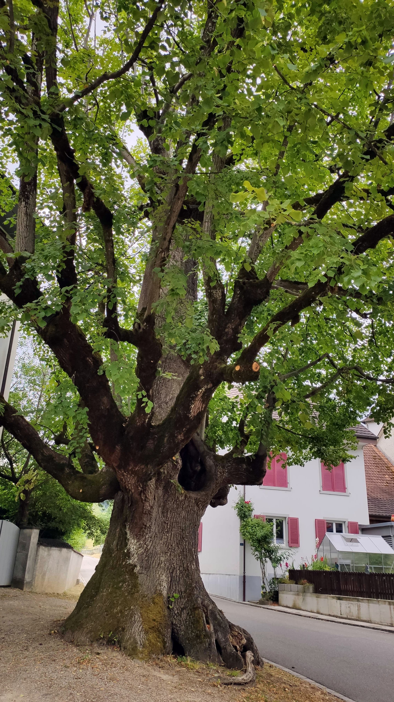

Die Wintersinger Sommerlinde

Die Linde
von Jürgen Wagner
Im Dorf, da stand sie in der Mitte
Was immer einer jemals litte
Was immer einer auch getan
Hier ist die Zuflucht - hier ist man dran
Sie ist der Ort, wo man sich küsst
Hier ist der Ort auch des Gerichts
Hier ist der Platz, wo man sich trifft
Der träumen lässt, der einem hilft
Sie lindert einen tiefen Schmerz
Die Blätter zeigen an das Herz
Die Linde, sie lädt jeden ein
In ihrer Nähe gern zu sein
Ihr Duft macht einen ganz betört
Nicht nur Insekten, wie man hört
Mit ihrer sanften, linden Kraft
Ist sie ein Baum, der Frieden schafft
Quelle: Aus "Baumgedichte" - Berlin 2014
Infos
Die Sommerlinde ist in Europa heimisch. Ihre Blätter sind grösser als diejenigen der Winterlinde.
Der Baum kann bis 40 Meter hoch werden. Sein Stamm kann einen Umfang von über 9 Metern erreichen.
Die Dorflinde
Die Wintersinger Dorflinde steht vor dem Pfarrhaus. Sie ist über 200 Jahre alt und der Stamm ist hohl.
Sommerlinden kennzeichnen häufig wichtige Punkte in Dörfern. Sie wurden auf Dorfplätzen, an Strassen,
an Festplätzen, als Gerichtsbäume oder als Friedensbäume gepflanzt. So wurden sie zu Orten der
Zusammenkunft, des Feierns oder des Austauschs von Nachrichten.
Die Linde ist in Europa heimisch. Der Baum wächst bevorzugt dort, wo er von Menschen angepflanzt wird:
auf Dorfplätzen, an Strassen, Alleen und Parks oder auf Wiesen. Wild kommt die Linde in unserem Land eher selten vor.
Bei den Germanen und den Slawen galt die Linde als heiliger Baum.
Für uns ist sie ein Baum, der schon lange eine besondere Stellung einnimmt.
Sie steht - im Gegensatz zur Eiche - für Weiblichkeit, Lieblichkeit, Fruchtbarkeit, den Sommer,
Frohsinn, Schönheit und Liebe. Früher gab es im Dorfkern oft eine große, weit ausladende Linde,
die Treffpunkt war und als „Tanzlinde“ für Trauungen oder auch als Gerichtsbaum genutzt wurde.
Sie war der Baum der Zusammenkunft und des Austauschs von Nachrichten. Viele Orte, Familiennamen,
Gaststätten sind nach ihr benannt. Ihre heilenden Kräfte erfährt man direkt in ihrer Nähe,
aber auch im Lindenblütenhonig und dem Teeaufguss der Blüten, der gegen Erkältungskrankheiten hilft.
Selbst nach Kriegen hat man sich an sie erinnert und pflanzte sog. ‚Friedenslinden’.
Über